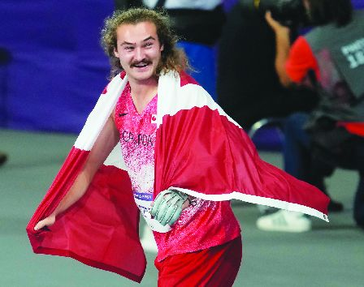
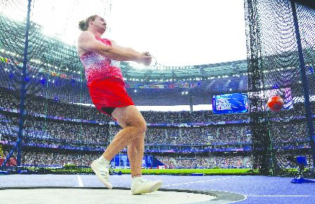

来自卑诗省纳奈莫的卡茨伯格在昨日的男子链球决赛中表现出色，夺得奥运冠军。（加新社）
巴黎奥运昨进入第9天，加拿大选手在男子链球和男子63.5公斤级拳击分别夺得一面金牌和一面铜牌，令奖牌总数增至17面，包括5金4银8铜，在奖牌榜保持第11位。
来自温哥华岛纳奈莫(Nanaimo)的22岁卡茨伯格(Ethan Katzberg)在男子链球决赛中表现出色，以84.12米的佳绩摘金并打破奥运纪录；其馀11名选手都未能突破80米大关。是次成绩仅略低于卡茨伯格今年4月在肯尼亚创下84.38米的世界赛季最佳成绩。他是首位在该项目中获得奥运冠军的加拿大选手。
加拿大另一名选手汉密尔顿(Rowan Hamilton)，在3次投掷后被淘汰，最后以76.59米排名第九。
加拿大上一次获得奥运会链球奖牌是在112年前，吉利斯(Duncan Gillis)在1912年斯德哥尔摩奥运会上获得银牌。
加拿大女选手罗杰斯(Camryn Rogers)在女子链球资格赛中，以第二好成绩晋级周二的决赛。罗杰斯也是现任世界冠军。
另外，斯高沙省25岁选手桑福德(Wyatt Sanford)在男子63.5公斤级拳击决赛中不敌法国的乌米哈(Sofiane Oumiha)，但仍获得铜牌。这是本国28年来在奥运拳击项目第一次夺得奖牌。
加拿大拳手刘易斯(Lennox Lewis)曾在1988年汉城奥运会上获得金牌；本国另一位拳手德菲亚格邦(David Defiagbon)在1996年亚特兰大奥运会上摘银。
在来自安省万锦(Markham)的加国飞人德格拉斯(Andre De Grasse)在男子100米跑准决赛，获得9.98秒本赛季最佳成绩，但这个成绩不足以让他晋级。他在准决赛中排名第五，总体排名第12。
加拿大女子篮球队也不敌尼日利亚队，以70比79败阵。